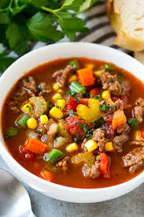

Hamburger Soup

Description
This hamburger soup recipe features a wonderful mix of vegetables and ground beef that goes great with homemade bread.
Ingredients
- 1 pound lean ground beef
- 5 cups water
- 1 (16 ounce) can diced tomatoes
- 1 (10 ounce) package frozen corn kernels
- 1 (8 ounce) can tomato sauce
- 1 cup chopped carrots
- 1 cup chopped celery
- 1 cup chopped onion
- 6 beef bouillon cubes
- 3 tablespoons ketchup
- 1 teaspoon dried basil
- 1 teaspoon salt
Steps
- Gather all ingredients.
- Heat a large skillet over medium-high heat. Cook and stir ground beef in the hot skillet until browned and crumbly, 5 to 7 minutes. Drain and discard grease.
- Combine beef, water, tomatoes, corn, tomato sauce, carrots, celery, onion, bouillon, ketchup, basil, and salt in a large stockpot; bring to a boil. Reduce heat and simmer for at least 1 1/2 hours.